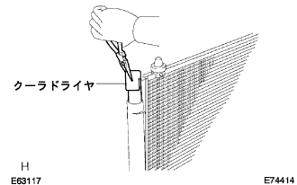

Capacitar ASSY (with receiver) assembly |
| 1. Cooler dryer installation |
|  |
Use a pliers to attach a cooler dryer.
 |
Apply a compressor oil (ND-Oil8) to the O-ring.
 |
Use a straight hexagon wrench 14 to attach a new Kiyatsup W/filter to the mojurator.
| 2. Cooler condenser cushion No.1 installation |
Attach the No. 1 Condens Sactsushion to the No. 1 Condensa Braketto Color.
 |
With two bolts, two Cooler Condens Sakutshiyon No. 1 is installed together with the No. 1 capacitor bracketto color.